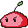
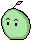
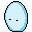
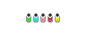
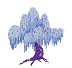

Brown and RISD come together every weekend to discuss game development and critique, from design to art to dev to the actual playtesting of the games themselves. This club has been great fun for me and really inspires me to pursue games and interactive media. The usual routine involves some weeks of design before a day-long game jam where we churn out a working game in about 12 hours.
Idol



Sprite assets for a game based on "worship".
Echo
While this game never quite got off the ground, the conceptual phase was very fun to play with as we experimented with different mechanics and aesthetics. Here are some concepts and assets I played around with in this process.



return